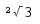
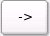
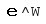
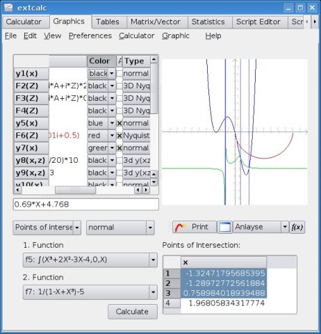
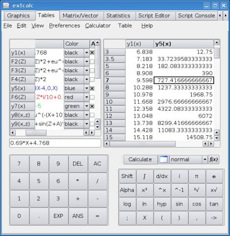
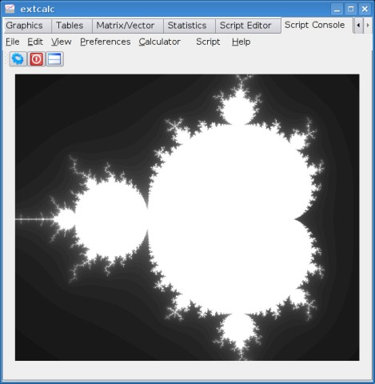
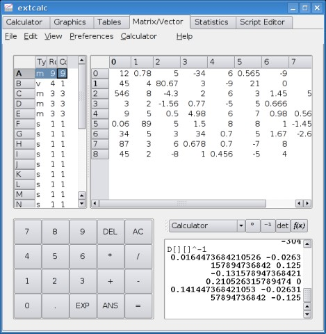
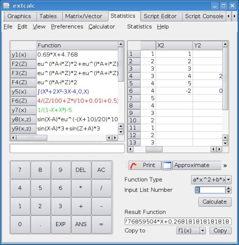
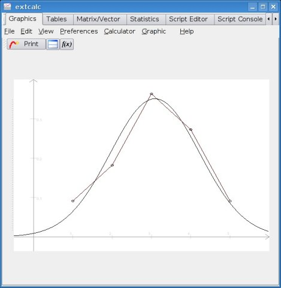

Extcalc - wissenschaftlicher Taschenrechner
Version 0.9.1
Inhalt
1. Einleitung
2. Installation
3. Bedienung
3.1 Taschenrechner
3.1.1 Standardmodus
3.1.2 Base Modus
3.2 Grafik
3.2.1 Graphen zeichnen
3.2.2 Graphen auswerten
3.2.3 Screenshots abspeichern
3.3 Tabellen
3.4 Scriptprogrammierung
3.4.1 Allgemeines
3.4.2 Der Script-Editor
3.4.3 Die Script-Sprache
3.5 Matrix-, Vektorrechnung
3.6 Statistik
3.7 Einstellungen
4. Sonstiges
1. Einleitung
Extcalc ist ein wissenschaftlicher, grafischer Taschenrechner. Extcalc kann zum berechen komplizierter mathematischer Ausdrücke,
zum Zeichnen von Funktionsgraphen, und zum Auswerten von Funktionen benutzt werden. Es enthält auch eine C-ähnliche Script-Sprache.
Diese Hilfe wurde für die Version 0.9.1 von Extcalc geschrieben.
2. Installation
Dies ist die Beschreibung zur Installation von Extcalc aus dem Quellcode-Paket. Vorkompilierte Pakete müssen mit dem Paketmanager der jeweiligen
Distribution installiert werden.
- Paket auspacken (tar -xzf extcalc-0.9.1.tar.gz)
- ins Verzeichnis wechseln (cd extcalc-0.9.1)
- konfigurieren (./configure --enable-language_de)
- kompilieren (make)
- root-rechte erlangen (su)
- installieren (make install)
Sprachunterstützung:
Um das Programm in Englisch zu installieren muss zur konfiguration nur "./configure" aufgerufen werden.
Für die deutsche Version muss "./configure --enable-language_de" aufgerufen werden.
Für die Installation in französischer Spracher muss "./configure --enable-language_fr" aufgerufen werden.
3. Bedienung
Da dies noch eine Enticklungsversion von Extcalc ist, kann sich die Bedienoberfläche noch
stark ändern. Diese Informationen beziehen sich auf die Version 0.9.1. Mit dem Reiter unter der
Menüleiste kann man zwischen den einzelnen Komponenten umschalten.Dies sind ein Taschenrechner, ein Grafik-Fenster
zum Zeichnen und analysieren verschiedner Typen von Graphen, ein Tabellen-Fenster, ein Script-Editor und eine Script-Konsole zum
Ausführen von Scripten.
3.1 Taschenrechner

Das Taschenrechner-Fenster
Bedienelemente
Im Bild oben ist das Ein- und Ausgabefenster des Taschenrechners zu sehen. Hier können Rechnungen eingegeben werden,
und auch die Ergebnisse werden dort angezeigt.
Im Bild unten befinden sich zwei Tastenblöcke zur Eingabe von Rechnungen. Links der Zahlenblock mit einigen
Steuertasten, rechts der Funktionsblock mit allen Rechenfunktionen.
In der Mitte rechts befinden sich noch zusätzliche Bedienelemente: Der Vollbild-Knopf, zum maximieren des Ein-
und Ausgabe Fensters, der Status-Umschaltknopf (siehe 3.1.1 und 3.1.2)
und Schnelleinstellungmenü, das entweder, wie im Bild oben, das verwendete Winkelmaß, oder die Zahlenbasis anzeigt.
Eingabe einer Rechnung
Es gibt verschiedene Möglichkeiten, eine Rechnung in Extcalc einzugeben:
1. Eingabe per Tastatur
Dazu muss man nur in den Eingabebereich des Fensters klicken und dort die Rechnung eingeben
Zum Berechnen des Werts einfach die Eingabetaste drücken. Wird die Eingabetaste ohne weitere
Eingaben noch einmal gedrückt, wird die Berechnung wiederholt. Wenn man weiterschreibt, kann
man automatisch in einer neuen Zeile eine neue Rechnung eingeben. Es ist auch möglich, alte
Berechnungen zu verändern und erneut berechnen zu lassen. Dazu muss man nur mit der Maus die
entsprechende Zeile auswählen und abändern. Der Text wird automatisch in die unterste Zeile
kopiert.
Da es nicht möglich ist, mit der Tastatur alle Rechenzeichen einzugeben, ist es manchmal
nötig, die integrierten Tasten zu benützen.
2. Eingabe über die Rechner-Tasten
Mit der integrierten Tastatur können die meisten unterstützten Rechenfunktionen eingegeben werden.
Um die Eingabe zu starten, ist es ebenfalls nötig, dass man mit der Maus in das Eingabefenster
klickt. Anschließend kann man mit den jeweiligen Tasten die Rechnung eingeben. Zum Ausführen
der Berechnung drückt man die "="-Taste. Es ist auch möglich, vorher eingegebene Rechnungen zu
verändern und erneut berechnen zu lassen. Dazu muss man ebenfalls mit der Maus in die
entsprechende Zeile klicken und kann anschließend die Rechnung beliebeg verändern.
3. Eingabe über den Funktionskatalog
Durch drücken des Katalog-Knopfes erhält man eine Liste aller in Extcalc
verfügbaren Operationen und Befehle. Die Befehle sind zur Übersicht in Gruppen gegliedert. Beim Auswählen eines
Befehls oder einer Operation wird der entsprechende Text in das Eingabefenster kopiert.
3. Konstanten und Umrechnung
Durch Drücken des Konstanten-Knopfes erhält man ein Menü, in dem aus einer Liste von verschiedenen mathematischen
und physikalischen Konstanten Einträge ausgewählt werden können. Außerdem können eigene Konstanten zur Liste
hinzugefügt werden können.
Besondere Tasten:
DEL
Diese Taste entspricht der Rücktaste auf der Tastatur.
AC
Diese Taste löscht alle bisherigen Eingaben und Ergebnisse.
Shift
Durch das drücken der Shift-Taste, kann man die Alternative Belegung der Tasten benützen.
Sobald man die Shift-Taste drückt, werden auf den anderen Tasten die entsprechenden
Alternativ-Funktionen angezeigt.
Alpha
Diese Taste schaltet zur Tastaturbelegung für die Benutzung von Variablen um.
hyp
Mit dieser Taste kann man den Sinus, Kosinus, Tangens hyperbolicus eingeben.
ANS
Diese Taste dient zum Abfragen des Antwortspeichers. Durch drücken der Taste kann man mit
dem letzten Ergebnis weiterrechnen.
Richtige Eingabe einer Rechenfunktion
Vorrang bestimmter Funktionen:
Eine Rechnung wird grundsätzlich unter Berücksichtigung folgender Regeln von links nach rechts verarbeitet.
Prioritätsliste:
1. Klammern
2. Sonderoperationen: Integral, Differential
3. Binäre Operatoren 1: Wurzel, hoch, ...
3. Unäre Operatoren: sin, cos, log, ...
4. Bitoperationen: &, |, ...
5. Binäre Operatoren 2: *, /
6. Binäre Operatoren 3: +, -
7. Vergleichsoperatoren: ==, !=, ...
8. Zuweisungen: ->, =
9. Logikoperatoren: &&, ||, ...
Die Eingabe einer Wurzel ist nur über die Wurzel-Taste des Taschenrechners möglich. Es
gibt dazu eine Quadratwurzeltaste, eine Kubikwurzeltaste und eine Taste für beliebige
Wurzeln.
Quadratwurzel:
 Quadratwurzeltaste
Quadratwurzeltaste
Berechnen eines Werts
 Rechnung unter der Wurzel
Rechnung unter der Wurzel
Zum Berechnen der Quadratwurzel muss man zuerst die Wurzeltaste drücken und anschließend
den Wert eingeben. Falls ein ganzer Rechenausdruck unter der Wurzel stehen soll,
muss diser in Klammern gesetzt werden. Ohne Klammer wird die Wurzel von der Zahl berechnet, die
unmittelbar hinter dem Wurzelzeichen steht.
Die Kubikwurzel kann man durch Drücken der Tasten  +
+
 berechnen.
berechnen.
Beliebige Wurzeln:
 Taste für beliebige Wurzeln
Taste für beliebige Wurzeln
 Berechnung eines Werts (sechste Wurzel aus Neun)
Berechnung eines Werts (sechste Wurzel aus Neun)
Zum Berechnen einer beliebigen Wurzel, wird zuerst der Grad eingegeben (z. B. 6) dann die Taste
eingebeben und schließlich der zu berechnende Wert.
Zufallszahlengenerator:
Zum Erzeugen von Zufallszahlen steht die Rand-Funktion zur Verfügung.
 Zufallszahlentaste
Zufallszahlentaste
 Ausgabe einer Zufallszahl (Zwischen 0 und 10)
Ausgabe einer Zufallszahl (Zwischen 0 und 10)
Die Zufallsfunktion erzeugt Zehnstellige Zufallszahlen. Nach dem rnd-Befehl MUSS ein Wert
eingegeben werden. Die Zufallszahl hat dann einen Wert zwichen 0 und dem eingegebenen Wert.
Es sind auch negative Zahlen möglich.
Differentialrechnung:
Der Taschenrechner kann Näherungswerte einer Differentialfunktion berechnen. Die Genauigkeit
beträgt dabei etwa 8 Stellen abhängig von der jeweiligen Gleichung.
 Taste für Differential-Funktion
Taste für Differential-Funktion
 Richtige Eingabe einer Differentialrechnung
Richtige Eingabe einer Differentialrechnung
Die Funktion wird folgendermaßen benützt: d/dx(Grundfunktion,Stelle)
Die Grundfunktion muss als Parameter X enthalten (X-Taste verwenden). Beispiel: 2X^3-3X+3
Nach dem Komma, wird der X-Wert angegeben, für den die Berechnung ausgeführt werden soll. Dies
ist immer eine konkrete Zahl. Als Ergebnis erhält man die Steigung an der angegebenen Stelle.
Integralrechnung:
Es ist auch möglich, eine näherungsweise Integralrechnung in Form einer Flächenberechnung
durchzuführen. Es können nur integrierbare Funktionen angegeben werden, ansonsten bricht der Befehl
mit einer Fehlermeldung ab.
 Die Integral-Taste
Die Integral-Taste
 Eingabe einer Integralrechnung
Eingabe einer Integralrechnung
Benutzung der Funktion: Integralzeichen(Grundfunktion,Startwert,Endwert)
Die Grundfunktion wird genauso wie bei der Differentialrechnung eingegeben. z.B.: sin(X)*3
Es wird dann die Fläche unter dem Grafen der Grundfunktion zwischen den Stellen Startwert
und Endwert berechnet. Die Angabe beider Werte ist nötig. Es wird nicht der Betrag der Fläche
berechnet. Bei Flächen unter der X-Achse erhält man ein negatives Ergebnis.
Bei Flächen, die über und unter der X-Achse liegen, wird die Differenz ausgegben.
Verwenden von Variablen:
Zum Speichern von Werten stehen 26 Speicherplätze zur Verfügung, die mit den Großbuchstaben
des Alphabets angesprochen werden. Auf der Integrierten Tastatur muss zum Setzen einer Variablen
zuerst der Wert eingegeben werden, dann die Taste  gedrückt werden und
durch Drücken von  +Buchstabentaste der Wert zugewiesen werden.
+Buchstabentaste der Wert zugewiesen werden.
 Wert in Variable speichern
Wert in Variable speichern
 Gespeicherten Wert benutzen
Eine Variable kann wie eine normale Zahl benutzt werden. Wenn in einer Variablen noch kein Wert
gespeichert wurde, hat diese den Wert 0. Die Variablen werden beim
Beenden des Programms nicht abgespeichert.
3.1.1 Standardmodus
Normalerweise befindet sich das Programm in diesem Modus. Alle Funktionen können wie oben beschrieben benutzt werden
und die Ergebnisse werden immer als Gleitpunkt-Dezimalzahl ausgegeben und eingegeben. In der Schnelleinstellungsbox
unter dem Ausgabefenster kann man das Format für Winkelfunktionen umstellen.
Es können alle Variablen von A bis Z verwendet werden, aber nicht alle Logik-Funktionen sind in diesem Modus
möglich. Nicht-dezimale Zahlen können nicht benutzt werden. Für alle Logik-operationen und für spezielle
Zahlensysteme sollte der Base Modus verwendet werden.
Komplexe Zahlen
Komplexe Zahlen sind im Rechner standardmäßig deaktiviert.
Sie können entweder im Rechner-Einstellungsdialog unter Einstellungen-Menü oder direkt im Rechner-Menü aktiviert und deaktiviert werden.
Eine komplexe Zahl wird durch anhägen des Buchstabens i geschrieben.
Folgende Operationen unterstützen komplexe Zahlen:
+ - * / ^
root sqrt curt
sin cos tan
sinh cosh tanh
lg ln
abs arg conj real imag
3.1.2 Base Modus
Drückt man den Rechenmodus-Knopf neben dem Vollbildknopf, dann schaltet der Rechner in den Base Modus. Die
Zusatzfunktionen, die in diesem Modus verfügbar sind, können nur im Rechnerfenster, nicht im Grafikmodus
genutzt werden. Beim Umschalten werden werden auf den Tasten sofort die zusätzlichen Logikfunktionen angezeigt.
Mit der Shift-Taste kann man zusätzliche Funktionen aufrufen. In der Schnelleinstellungsbox kann man einstellen,
welches Zahlensystem man benutzen möchte.
Alle Berechnungen in diesem Modus werden mit Ganzzahlen durchgeführt, daduch kann man die meisten wissenschaftlichen
Funktionen nicht mehr sinnvoll nutzen.
Da die Buchstaben A bis F im Base Modus für hexadezimale Zahlen belegt sind, können als Variablen nur noch
die Buchstaben G bis Z verwendet werden.
Aber alle Logik-Operationen und Umrechnungen zwischen den verschiedenen Zahlensystemen können nur in dieser Einstellung
benutzt werden. Für die Berechnungen wird eine 64Bit Ganzzahl mit Vorzeichen verwendet.
Zur Umrechnung zwischen verschiedenen Zahlensystemen setzt man vor die Zahl ein Kürzel für das entspechende
Zahlensystem.
Eine Hexadezimalzahl wird so eingegeben: hex13F6
Die anderen Kürzel sind: dec, oct, bin
Für die Buchstaben in Hex-Zahlen dürfen nur Großbuchstaben verwendet werden.
Wird eine Zahl in dem Zahlensystem eingegeben, das gerade voreingestellt ist, dann muss kein Kürzel vor die Zahl
geschrieben werden.
Die zusätzlichen Funktionen können in zwei Gruppen eingeteilt werden:
Logische Operationen:
&&, ||, not
Diese Operationen liefern als Ergebnis nur true oder false zurück.
Die Zahl 0 repräsentiert false, alle Zahlen ungleich 0 sind true.
Binäre Operationen:
&, |, <<, >>, ~, xor
Diese Funktionen verändern jedes einzelne Bit innerhalb der Zahl
3.2 Grafik
Im Grafik-Modus des Rechners kann man verschiedene Funktionsgrafen zeichnen und auswerten
lassen. Extcalc unterstützt verschiedene Typen von Funktionen und verschiedene Koordinatensysteme.
Es folgt eine Liste der verfügbaren Graphen- und Koordinatensystemtypen:
Graphentypen
Standardgraph y(x)=X
Dies ist die Voreinstellung für alle Graphen. Es ist ein normaler 2D-Graph. Die zugehörige Funktion verwendet
die Variable X (es kann auch ein kleines x geschrieben werden). Für diese Graphen sollte ein kartesiches
2D-Koordinatensystem verwendet werden.
Polarkoordinatengraph r(x)=X
Das ist die Einstellung für Graphen im polaren Koordinatensystem. Es wird der Radius r in Abhängigkeit vom
Winkel X berechnet. Für diese Art von Graphen sollte man ein polares Koordinatensystem verwenden.
Parameterfunktionsgraph x(T)=T y(T)=T
Ein solcher Graph benötigt zwei Funktionen mit dem Parameter T. Es wird die X-Koordinate und die Y-Koordinate
jeweils mit einer eigenen Funktion in abhängigkeit vom Parameter T berechnet. Der Parameter T wird nicht im
Koordinatensystem angetragen. Der Wertebereich von T kann in den Grafikeinstellungen verändert werden.
Ungleichungen y(X) < X, y(X) > X, y(X) <=X, y(X) >=X
Bei dieser Art von Graphen, wird die Fläche farbig gezeichnet, in der die Ungleichungsbedingung erfüllt wird.
3D-Graph y(x,z)=XZ
Für 3D-Graphen im kartesischen Koordinatensystem wird diese Einstellung verwendet. Die entsprechende Funktion
berechnet die Höhe y in Abhängigkeit von X und Z. Um 3D-Graphen korrekt anzeigen zu können, sollte ein
3D-Koordinatensystem eingestellt werden.
Ortskurven und 3D-OrtskurvenY(Z)=Z+Zi
Diese beiden Typen von Graphen dienen zur Anzeige von komplexen Funktionen. Der Funktionsparameter ist ein reeller Wert Z.
Bei einer normalen Ortskurve wird der Bereich von Z in den Graphik-Einstellungen angegeben. Der Real- und der Imaginär-Anteil
werden an der X- bzw. Y-Achse des 2D-Koordinatensystems aufgetragen. Bei der 3D-Ortskurve ist der Z-Bereich entsprechend der
Z-Achse des 3D-Koordinatensystems. Der Parameter Z wird auf dieser Achse angetragen. Real- und Imaginäranteil des Ergebnisses
werden an der X- und Y-Achse angetragen.
Dynamische Graphen
Alle oben beschriebenen Typen können auch als dynamische Graphen verwendet werden. Diese Option kann in der
Funktionstabelle für jede Funktion einzeln ein- oder ausgeschaltet werden. Wird dynamische Grafik aktiviert,
dann kann man in der Funktion einen zusätzlichen Parameter A verwenden (Beispiel: y=AX). Dieser wird dann
Zeitabhängig verändert. Der Start- und Endwert für den Parameter A, sowie die Schrittzahl und die Verzögerungszeit
für dynamische Graphen können im Grafik-Einstellungsdialog beliebig angepasst werden. Diese Art der Darstellung von
Graphen ist allerdings sehr rechenintensiv. Für dynamische 3D-Graphik ist eine 3D-Graphikkarte ist nötig.
Logikfunktionen
Wenn diese Option aktiviert ist, ist es möglich, in den Funktionen logische Ausdrücke wie z. B. X>0 oder Script-Befehle
wie z. B. if else zu verwenden. Diese Option sollte nur ausgewählt werden, wenn auch Script-Befehle oder logische Ausdrücke verwendet
werden, weil die Berechnung wesentlich mehr Zeit erfordert.
Koordinatensysteme
Standard-Koordinatensystem
Das Standard-Koordinatensystem ist ein zweidimensionales kartesisches Koordinatensystem mit y- und x-Achse.
Es zur Anzeige von normalen Graphen des Typs y(x)=X und für Parametergraphen vorgesehen. Die Wertebereiche
der Axen können sowohl negativ als auch positiv eingestellt werden. Es können auch alle anderen Typen von
Graphen in dieses Koordinatensystem eingezeichnet werden. Wenn man die rechte Maustaste drückt, kann man
das Koordinatensystem mit der Maus verschieben. Mit dem Mausrad kann man hinein- und herauszoomen.
Polarkoordinatensystem
Dieses Koordinatensystem ist zum Anzeigen von polaren Graphen geeignet. Im Polarkoordinatensystem werden Winkel
und Radius als Raster angezeigt. Der maximal angezeigte Winkel bzw. Radius wird immer ab dem Ursprung ins
Postitive gerechnet. Negative Werte sind nicht möglich. Es ist ebenfalls ein zweidimensionales Koordinatensystem.
Mit dem Mausrad kann man das Koordinatensystem vergrößern und verkleinern.
3D-Koordinatensystem
Das kartesische 3D-Koordinatensystem ist zur Darstellung von 3D-Graphen geeignet. Es können aber auch alle anderen
Typen angezeigt werden. Die x- y- und z-Achsen können sowohl negative als auch positive Werte annehmen. Das
Koordinatensystem kann durch drüchen der rechten Maustaste mit der Maus gedreht werden. Mit dem Mausrad kann man
das Bild zoomen.
3.2.1 Graphen zeichnen


Das Grafikfenster ist in drei Teile aufgeteilt: Funktionstabelle, Ausgabefenster und Tastatur.
Funktionstabelle
In die erste Spalte der Tabelle werden alle Funktionen eingetragen, die benötigt werden. Es
können bis zu 20 verschiedene Funktionen eingegeben werden.
Zur besseren Übersicht, kann man den verschiedenen Funktionen Farben zuweisen. Diese werden in der
zweiten Spalte ausgewählt. Die Funktion wird dann in der Tabelle in der gewählten Farbe dargestellt,
und auch später in dieser Farbe gezeichnet.
Da man nicht immer von allen Funktionen, die in der Tabelle eingetragen sind, auch einen Grafen
anzeigen möchte, lassen sich die Funktionen mit den Boxen in der dritten Spalte einzeln ein- oder
ausschalten.
In der vierten Spalte kann der Typ der Funktion eingestellt werden. Es können normale Funktionen
der Form f(x)=X, Radiusfunktionen r(x)=X für das polare Koordinatensystem, Dreidimensionale Funktionen
y(xz)=XZ, Parameterfunktionen x=T; y=T, Ungleichungen eingegeben werden. In der letzten Spalte kann
noch ausgewählt werden, ob die Funktionen von dem Zeitparameter A abhängen sollen.
Es können auch Graphen mit verschiedenen Typen in ein Koordinatensystem eingezeichnet werden. Die
Art des Koordinatensystems muss aber zusätzlich im Grafik-Menü oder in den Grafik-Einstellungen ausgewählt
werden.
Beispiele
| Typ | Funktion | Beschreibung |
|---|
| Normal | sinX | Sinusfunktion
Koordinatensystem: Standard
Größe: Standard trigonometrisch |
| (X+5)^2-4 | Parabel
Koordinatensystem: Standard, Standardgröße |
| if(A<=10) (1-A/5)*x^2; else if(A<=20) -(x+5*(A-10)/10)^2; else -(x+5)^2-4*(A-20)/10; | Animierte Parabel
Koordinatensystem: Standard, Standardgröße
dynamsisch an mit A von 0 bis 30
Logikfunctionen an |
| Polar | X+2 | Archimedische Spirale
Koordinatensystem: Polar, Standardgröße |
| 5*sin(4X) | Sinusfunktion
Koordinatensystem: Polar, Standardgröße |
| 2/(1+0.7cosX) | Ellipse
Koordinatensystem: Standard |
| Parameter | T | Parabel
Koordinatensystem: Standard, Standardgröße
T von -10 bis 10 |
| T^2 |
| sinT*(exp(cosT)-2*cos(4T)-(sin(T/12))^5) | Butterfly Kurve
Koordinatensystem: Polar, max. Radius=5
T von 0 bis 20 |
| cosT*(exp(cosT)-2*cos(4T)-(sin(T/12))^5) |
| F=.01*T^3+1;U=1-A/15;((1+U)*T+(1-U)*F)/2 | Inverse Funktion
Koordinatensystem: Standard, Standardgröße, T von -10 bis 10
dynamisch an mit A von 0 bis 30
Logikfunktionen an |
| ((1-U)*T+(1+U)*F)/2 |
| (1-A/15)*T | Spiegelung
Koordinatensystem: Standard, Standardgröße, T von -10 bis 10
dynamisch an mit A von 0 bis 30
Logikfunktionen an |
| T^3-5*T^2+5*T-2 |
| F=.05*T^3;U=atan(F/T);R=sqrt(T^2+F^2);cos(pi/30*A+U)*R | Punktsymmestrische Funktion
Koordinatensystem: Standard, Standardgröße, T von 0 bis 10
dynamisch an mit A von 0 bis 30
Logikfunktionen an |
| sin(pi/30*A+U)*R |
| 3D | sin(X²)*cos(Z²) | Koordinatensystem: 3D, X, Y und Z von -3 bis 3 |
| L=0.01;U=2;K=1e-3;if(X<U)0;else{if(Z>0 && Z<X-U)K*Z*(X-U-Z/2)*(1+L*Z);else if (Z>0) K/2*(X-U)²*(1+L*Z); else 0;} | MOSFET-Kollektorstrom
Koordinatensystem: 3D, X und Z von 0 bis 10,Y von -0.01 bis 0.04
Logikfunktionen an |
| abs(arg(((X+Zi)^2-1)*((X+Zi)^2-2-i)^2/((X+Zi)^2+2+2i))) | Komplexer Graph in 3D (X=Realteil,Z=Imaginärteil)
Koordinatensystem: 3D, X und Z von -2 bis 2,Y von 0 bis 5
Logikfunktionen an, Komplexe Rechnung im Rechner eingeschaltet |
| Komplexer Graph | exp(Z*i) | Koordinatensystem: 3D, Standardgröße |
| Ortskurve | 10/(1+Z*i) | Koordinatensystem: Standard, Standardgröße |
Import und Export von Graphen
Es ist möglich, die Funktionen der Graphen zu Exportieren oder Importieren. Dazu werden die Funktionen in einer Datei abgespeichert.
Die vom Export erzeugten Dateien können ausgetauscht oder archiviert werden. Mit der Import-Funktion können die Funktionen wieder
in Extcalc geladen werden.
Die entsprechenden Dialoge können über das Menü Grafik -> Graphen importieren bzw. Grafik -> Graphen exportieren aufgerufen werden.
3.2.2 Graphen auswerten

Durch drücken des "Analysieren"-Knopfes kann man den Rechner in den Analysemodus versetzen.
Hier können verschiedene Berechnungen an den Funktionen durchgeführt werden. Alle möglichen Operationen
kann man in der Auswahlbox unter der Funktionstabelle einstellen. Wird eine Operation ausgewählt, dann
kann man im Fenster sofort die entsprechenden Eingabefelder für die Parameter sehen.
Alle Analyseoperationen mit Ausnahme der Integralrechnung, der Differentialrechnung und dem Newtonverfahren
analysieren nur den im Ausgabefenster sichtbaren Bereich einer Funktion.
Es können nur die Funktionen analysiert werden, die in der Funktionstabelle auf "Aktiv" gesetzt sind.
Es können immer nur die zum Koordinatensystem passenden Funktionen analysiert werden, also im kartesichen
2D-Koordinatensystem normale Funktionen, Parameterfunktionen und Ungleichungsfunktionen, im polaren
Koordinatensystem polare Funktionen und 3D-Funktionen nur im kartesischen 3D-Koordinatensystem.
Der Funktionstyp, der analysiert werden soll, kann in der Box unter der Funktionstabelle ausgewählt werden.
Für die verschiedenen Funktionstypen stehen jeweils nur bestimmte Analysefunktionen zur Verfügung. Welche
Analysemethoden für welche Funktionen ausgeführt werden können, zeigt die Tabelle unten.
| Standard | Polar | Parameter | Ungleichungen | 3D-Graph | Ortskurve |
| Y-Wert berechnen | x | x | x | x | x | x |
| Nullstellen berechnen | x | x | x | x | | x |
| Newtonverfahren | x | x | | x | | |
| X-Werte berechnen | x | x | x | x | x | x |
| Schnittpunkte berechnen | x | x | | x | | |
| Extremwerte berechnen | x | x | | x | | |
| Integral berechnen | x | x | | x | x | |
| Differential berechnen | x | x | x | x | x | |
| Z-Wert berechnen | | | | | x | |
Folgende Analyseoperationen stehen zur Verfügung:
Y-Wert berechnen:
Bei dieser Operation werden zu einem beliebigen X-Wert, der entweder in die Eingabezeile geschrieben werden kann
oder per Mausklick im Ausgabefenster ausgewählt werden kann, die Y-Werte aller Funktionen berechnet werden.
Bei Parameterfunktionen kann es mehrere Y-Werte zu einem X-Wert geben. Bei 3D-Funktionen ist noch der gewüschte
Z-Wert anzugeben.
Nullstellen berechnen:
Hier kann man eine Funktion aus der Auswahlbox aussuchen, und von dieser durch drücken des "Berechnen"-Knopfes
die Nullstellen berechnen lassen. Die Nullstellen werden dann in der Ausgabetabelle aufgelistet.
Newton-Verfahren:
Dies ist ein besonderes Verfahren zur Berechnung von Nullstellen. Man kann dabei eine Funktion aus der Auswahlbox
wählen und den Startwert und die Anzahl der Schritte eingeben. Die Berechnung mit allen Zwichenergebnissen wird in
der Ausgabetabelle angezeigt. Da linke Feld in der letzten Zeile enthält das Endergebnis.
X-Werte berechnen:
Hier kann man die zugehörigen X-Werte zu einem bestimmten Y-Wert berechnen lassen. Der Y-Wert muss in die Eingabezeile
eigegeben werden. Durch Drücken des "Berechnen"-Knopfes werden alle Ergebnisse in der Ausgabetabelle angezeigt.
Bei 3D-Funktionen ist noch der entsprechende Z-Wert anzugeben
Schnittpunkte berechnen:
Bei dieser Operation können die Schnittpunkte von zwei Graphen berechnet werden. Die zugehörigen Funktionen müssen
in den Auswahlboxen ausgesucht werden und durch Drücken des "Berechnen"-Knopfes werden die Ergebnisse ausgegeben.
Bitte wählen sie nicht zweimal die gleiche Funktion aus. Bei Ungleichungen wird die Schnittfläche markiert.
Extremwerte berechnen:
Mit dieser Funktion werden alle Maximal- und Minimalwerte der ausgewählten Funktion berechnet.
Integral berechnen:
Um die Fläche unter dem Graphen zwischen zwei Punkten zu berechnen, kann man diese Operation verwenden.
Es muss ein Startwert und ein Endwert eingegeben werden. Bei 3D-Funktionen wird der Raum unter dem Grafen berechnet.
Nach dem Drücken des "Berechnen"-Knopfes wird das Ergebnis in der Tabelle ausgegeben.
Differential berechnen.
Diese Funktion berechnet die Steigung einer Funktion an einer bestimmten Stelle. Wenn man eine Funktion ausgewählt
und den X-Wert für die Berechnung eingegeben hat, erhält man durch drücken der "Berechnen"-Taste das Ergebnis in der
Ausgabetabelle. Bei Parameterfunktionen wird bei diesem Punkt die kartesische Ableitung zu einem bestimmten T-Wert
berechnet. Bei 3D-Funktionen werden die partiellen Ableitungen nach X und Z am angegebenen Punkt berechnet.
Z-Wert berechnen
Hier muss der X-Wert und der Y-Wert ausgewählt werden. Wenn man den Berechnen-Knopf drückt, werden die zugehörigen
Z-Werte angezeigt.
3.2.3 Screenshots abspeichern
Der Inhalt des Grafik-Fensters kann direkt als Bild abgespeichert werden. Dazu muss man in der Auswahl-Box unter dem Grafik-Fenster den Punkt
Screenshots/Zeichnen auswählen. Diese Einstellung bietet auch einige Zeichenfunktionen, mit denen man z. B. Deteils im Grafikfenster hervoreheben
kann.

Screenshot abspeichern:
Im oben dargestellten Fenster können Screenshots gespeichert werden.
Dabei kann die Größe des Screenshots, das Bildformat und der Dateiname zum Speichern eingestellt werden.
Zum Speichern muss man dann nur den Speichern-Knopf drücken. Dann wird das Bild im angegebenen Pfad gespeichert.
Zeichenfunktionen:
Falls man vor dem Abspeichern des Screenshots noch etwas anmerken oder hervorheben möchte, stellt Extcalc dazu verschiedene Zeichenfunktionen bereit.
Die gezeichnete Fläche ist von den Graphen und dem Koordinatensystem unabhängig. Wenn das Koordinatensystem geändert oder verschoben wird, bzw. die
Graphen neu gezeichnent werden, bleibt das gezeichnete an der selben Stelle erhalten.
Alle Zeichenfunktionen bieten einen Vorschau-Modus. Solange man die Maustaste gedrückt hält, wird nur die Vorschau eingezeichnet. Lässt man die
Maustaste los, so wird die Originalgraphik berechnet. Die Strichstärke kann sich dabei etwas verändern.
Es gibt folgende Standard-Zeichenfunktionen: Frei zeichnen, Linie, Rechteck, Kreis
Bei diesen kann die Strichstärke und die Farbe eingestellt werden.
Außerdem kann man noch Text einfügen. Dabei muss nach dem Drücken des Text-Knopfes der anzuzeigende Text eingegeben werden.
Bei gehaltener Maustaste ist wieder die Vorschau sichtbar, und beim Loslassen wird der Text eingefügt. Wenn man die Maustaste noch einmal drückt,
wird der selbe Text noch einmal eingefügt. Will man Textgröße, Farbe oder den Text selbst ändern, muss man den Text-Knopf noch einmal drücken.
Die Textgröße kann in der Box für die Strichstärke geändert werden.
Radierer: Will man einen Teil des gezeichneten wieder entfernen, dann kann man den Radierer verwenden. Dieser macht die radierten Stellen wieder
transparent. In der Vorschau wird das radierte weiß gezeichnet.
Außerdem können noch die letzten Schritte rückgängig gemacht werden, und das gesamte Bild kann gelöscht werden.
3.3 Tabellen
Extcalc bietet auch die Möglichkeit, Wertetabellen zu Funktionen erstellen zu lassen.

Tabellenfenster von Extcalc
Zur Erstellung der Wertetabellen werden die selben Funktionen werwendet, wie bei Graphen.
Es können Wertetabellen von allen Arten von Funktionen erstellt werden. Die verwendeten Funktionen in der
Funktionstabelle sind dieselben wie bei Graphen. In der Wertetabelle werden nur die Werte von den Funktionen berechnet,
die in der Funktionstabelle als aktiv gewählt sind. Es werden außerdem nur die Funktionen des Typs beachtet,
der für die Tabellen gewählt ist. Der Funktionstyp der Tabellen kann direkt im Tabellenmenü aus der Auswahlbox
ausgewählt werden, oder im Menü unter Tabellen oder im Einstellungsdialog. Für die Tabellenerstellung wird immer ein
Startwert und ein Endwert und die Anzahl der zu Berechenden Werte angegeben.
Bei Funktionen mit der Variablen x werden pro Funktion in einer Spalte die Werte angezeigt. Beim Parameterfunktionen
gelten für den Parameter T dieselben Einstellungen wie beim Parameter x. In der Wertetabelle wird eine Spalte für
die x-Werte und eine Spalte für die y-Werte erzeugt. Bei 3D-Funktionen wird bei jeder Funktion für jeden z-Wert
eine eigene Spalte erzeugt.
3.4 Scriptprogrammierung

In Extcalc ist auch ein Script-Interpretor zur Programmierung des Taschenrechners enthalten. Die Programme können direkt mit
Extcalc geschrieben und verwaltet und ausgeführt werden.
3.4.1 Allgemeines
In Extcalc kann man kleine Script-Programme schreiben und ausführen. Die Syntax ist ähnlich wie bei C, wobei auch die normalen
Taschenrechner-Befehle im Programm verwendet werden können. Die Script-Befehle können allerdings nicht im normalen Rechner verwendet werden.
Wird ein Programm ausgeführt, dann läuft es in einem eigenen Konsolenfenster ab. Die anderen Funktionen des Rechners können noch normal benutzt werden.
Zum Schreiben und Verwalten der verschiedenen Programme ist in Extcalc ein kleiner Script-Editor integriert.
Der Script-Interprter hat in dieser Version noch nicht den vollständigen Funktionsumfang.
Das Script-Verzeichnis enthält bereits einige Beispiel-Programme. Um ein solches Programm auszuführen, muss es im Editor ausgewählt werden.
Hat man es ausgewählt, kann man den Ausführen-Knopf drücken, um es das Programm zu laden. Die Ansicht schaltet dann zur Script-Konsole.
Wenn man in der Script-Konsole den Ausführen-Knopf drückt, wird das Programm gestartet. Es kann jederzeit beendet werden, indem man
den Abbrechen-Knopf drückt.
Weitere Beispielprogramme können auf der Projekt-Homepage extcalc-linux.sourceforge.net heruntergeladen werden.
3.4.2 Der Script-Editor
Das Script-Editor Fenster bietet alle grundlegenden Editorfunktionen, um die Script-Programme zu schreiben und zu verwalten.
Die Programme werden auch von dort aus aufgerufen.

Bevor der Script-Editor benutzt werden kann, muss ein Verzeichnis zum Speichern der Programmcodes und der benötigten Daten erstellt werden.
Extcalc fordert Sie beim ersten Start dazu auf, diese Verzeichnisse anzulgegen. Wenn es zu diesem Zeitpunkt abgelehnt wurde, können die Verzeichnisse
jederzeit über Einstellungen->Scripting nachträglich angelegt und geändert werden.
Dabei müssen Sie ein Grundverzeichnis auswählen, in dem zwei Unterverzeichnisse für Code und Daten mit den angegebenen Namen angelegt werden.
Neues Script anlegen:
Um ein neues Script anzulegen, können Sie entweder einfach den Code in das Editorfenster schreiben, und speichern drücken. Sie werden dann aufgefordert,
einen Dateinamen einzugeben und das Programm wird gespeichert.
Oder Sie klicken mit der rechten Maustaste in die Dateienliste und wählen "Neue Code-Datei" aus.
Die neue Datei wird sofort angelegt und im Editorfenster angezeigt.
Dateien laden und speichern:
Um ein gespeichertes Programm zu laden, kann man es einfach in der Dateiliste anklicken. Der Programmcode wird dann im Editorfenster angezeigt.
Wurde vorher ein anderes Programm geändert, so bleiben die Änderungen erhalten. Das vorher geänderte Programm wird mit einem Symbol gekennzeichnet, aber
noch nicht fest abgespeichert.
Um das gerade geöffnete Programm zu speichern, kann man einfach dne Speichern-Knopf rechts unter dem Editorfenster drücken.
Um eine vorher geänderte Datei, die noch nicht gespeichert wurde, abzuspeichern, kann man diese in der Dateiliste mit der rechten Maustaste auswählen
und auf "Speichern" klicken.
Um alle geänderten Dateien abzuspeichern, muss man mit der rechten Maustaste in die Dateiliste klicken und den Punkt "Alle speichern" auswählen.
Vor dem Beenden des Programms werden Sie ebenfalls gefragt, ob Sie alle Dateien Abspeichern wollen.
Falls Sie Sonderzeichen aus der integrierten Tastatur in ihrem Code verwenden sollten, so werden diese beim Abspeichern durch die entsprechenden
Ascii-Befehle ausgetauscht, um problemloses Laden und Speichern und externes Editieren zu ermöglichen.
Umgang mit den Dateien:
Unterverzeichnisse:
Die Programmdateien können in Unterverzeichnissen angeordnet und bearbeitet werden. Die Unterverzeichnisse können in in der Dateiliste angelegt und
gelöscht werden.
Umbenennen:
Die Code-Dateien können selbstverständlich auch umbenannt werden. Datein zu verschieben ist momentan noch nicht möglich, wird aber bald eingebaut
Löschen:
Dateien und Verzeichnisse können jederzeit wieder gelöscht werden. Verzeichniss aber nur, wenn Sie leer sind.
Änderungen außerhalb von Extcalc:
Man kann die Dateien und Verzeichnisse auch außerhalb des Script-Editors ändern, umbenennen oder löschen. Um die Änderungen in Extcalc zu übernehmen,
muss in der Dateiliste die rechte Maustaste gedrückt und "Aktualisieren" gewählt werden. Geänderte Scripte können dann einfach angeklickt werden.
Dies ist natürlich nicht nötig, wenn Extcalc während der Änderungen nicht gestartet war.
Sonderzeichen:
Selbstverständlich können beim Programmieren auch die Sondertasten auf der integrierten Tastatur von Extcalc verwendet werden. Beim Abspeichern werden
diese allerdings durch die jeweiligen ASCII-Befehle ausgetauscht, um Probleme beim Speichern und Laden zu verhindern und um zu ermöglichen, dass der Code
von einem externen Editor nicht beschädigt wird.
Script-Programme importieren und exportieren
Um einen Script-Quellcode zu Importieren oder zu Exportieren, kann man entweder den entsprechenden Knopf im Script-Editor drücken,
oder im Menüpunkt Script die gewünschte Funktion auswählen.
Wenn Sie einen Punkt gewählt haben, wird der Import/Export-Dialog angezeigt, in dem Quelle und Ziel ausgesucht werden können.
Mit der Importieren-Funktion kann ein Script-Programm in das Script-Verzeichnis geladen werden.
Mit der Export-Funktion kann ein Script-Programm aus dme Script-Verzeichnis an eine beliebige Stelle kopiert werden.
Programme ausführen:
Um ein Programm auszuführen, wählt man es aus der Dateiliste aus und klickt auf den "Ausführen"-Knopf.
Das Script-Programm wird dann übersetzt und die Ansicht wechselt in die Script-Konsole.
Auf der Script-Konsole werden dann eventuelle Fehler im Code angezeigt. Falls das Script ohne Fehler geladen werden konnte, kann man es mit dem
Ausfürhen-Knopf starten. Mit diesem Knopf kann immer das Programm ausgeführt werden, dass als letztes geladen wurde.
Es ist nicht möglich, zwei Programme gleicheitig zu starten. Falls bereits ein Programm läuft, wenn man ein Programm startet, wird abgefragt, ob
das laufende Programm beendet, oder das neue nicht gestartet werden soll.
Laufende Programme können jederzeit über den "Abbrechen"-Knopf unter der Script-Konsole beendet werden. Bei sehr hoher Prozessorbelastung ist es
möglich, dass das Abbrechen-Signal nicht rechtzeitig vom Script empfangen wird. Man muss dann den Abbrechen-Knopf noch einmal drücken, um
das Programm korrekt zu Beenden.
3.4.3 Die Script-Sprache
In Version 0.9.1 von Extcalc sind noch nicht alle geplanten Befehle und Funktionen implementiert. Nähere Informationen zu den geplaten
Funktionen finden Sie im Kapitel 4.
Probleme:
In der folgenden Liste sind Probleme aufgeführt, die im Script-Interpreter noch vorhanden sind.
1. Geschwindigkeit
Da die Programme von einem Interpreter abgearbeitet werden, laufen diese auch wesentlich langsamer, als kompilierte Programme.
Der Interpreter wird aber in späteren Versionen noch weiter optimiert.
2. Variablen:
Es können nur die Großbuchstaben von A bis Z als Variablen verwendet werden. Jede Variable kann auch als Array benutzt werden. Will man anstatt der Buchstaben symbolische Namen für die Variablen verwenden, so kann man sich entsprechende Makros definieren, z. B. "#define counter C".
3. Geringere Möglichkeiten
In dieser Version ist nur ein Teil der geplanten Funktionalitäten bereits aktiviert. Deshalb ist es nicht möglich, komplexe Probleme mit den
Script-Programmen zu lösen. Die Sprache wird in späteren Versionen noch so weit wie möglich ausgebaut. Sie ist aber trotzdem nur zum Lösen oder
automatisieren kleinerer mathematischer Aufgaben da. Komplexe Programme sollten in einer kompletten Programmiersprache wie C geschrieben werden.
Syntax:
Die Syntax der Extcalc Script-Sprache ist der C-Syntax ähnlich.
Grundregeln:
- Befehle werden mit einem Semikolon ; abgeschlossen
- Hinter Schleifen und bedingten Anweisungen folgt kein Semikolon, sonderen der auszuführende Befehl
- Sollen mehrere Befehle ausgeführt werden, so werden diese zwischen geschweiften Klammern { } geschrieben
- Es ist möglich, mathematische Operationen im Code zu verwenden. Auch diese werden mit einem Semikolon abgeschlossen
- Es können beliebig vielse Leerzeilen, Tabulatoren oder Leerzeichen im Code enthalten sein.
- Diese sind aber nicht zum Interpretieren des Programms nötig, und werden ohnehin vor dem Interpretieren entfernt
- Es ist möglich, ganze Kommentare wie in C++ mit zwei Schrägstrichen // zu beginnen. Der Rest der Zeile wird dann ignoriert
- Der C-Kommenter /* ... */ kann ebenfals verwendet werden. Alles, was sich innerhalb des Kommentars befindet, wird ingoriert.
- Der Vergleichsoperator besteht wie in C aus ZWEI GLEICHHEITSZEICHEN ==, ein Gleichheitszeichen bedeutet Zuweisung
- Will man eine Variable als Array verwenden, hängt man einfach den []-Operator an, das Array wird dann automatisch generiert
- Es gibt keine Unterfunktionen. Die Befehle werden direkt in die Datei geschrieben
- Es ist allerdings möglich, eine andere Code-Datei mit dem Befehl run() aufzurufen
Fehlermeldungen:
Beim Laden eines Scripts wird die Haupt-Datei und alle Unterprogramme, die aufgerufen werden von einem Interpreter in den Speicher geladen, ohne das
Script auszuführen. Das Speicher-Objekt, das dabei entsteht ist das ausführbare Script. Es kann unabhängig vom Quellcode so oft ausgeführt werden, wie
man will.
Falls beim Interpretieren des Script Fehler auftreten, werden diese auf der Script-Konsole angezeigt, und das Script kann nicht ausgeführt werden.
Da für den Interpreter die ursprüngliche Formatierung des Quelltextes nicht mehr existiert, wird die Zeilennummer anhand der im Code enthaltenen
Strichpunkte ermittelt. Deshalb befindet sich der Fehler manchmal in einer Zeile überhalb der Zeile, die in der Fehlermeldung angegeben ist.
Es kann auch vorkommen, dass ein Quellcode fehlerhaft ist, aber vom Interpreter dennoch übersetzt werden kann. Dies ist vor allem bei Fehlern innerhalb
von Rechnungen der Fall.
Es kann auch vorkommen, dass nur die Fehlermeldung "Preprozessor Error" ausgegeben wird, und der Script-Interpreter gar nicht aufgerufen wird.
Dann ist die Datei entweder leer, oder enthält überhaupt keine interpretierbare Information, oder Sie enthält einen Rückschrägstrich außerhalb
eines Strings.
Auch bei einem Fehler in einer #config oder einer #define Anweisung wird die "Preprocessor Error"-Fehlermeldung ausgegeben.
Variablen:
Als Variablen stehen wie oben genannt die Großbuchstaben von A bis Z zur Verfügung.
Diese können mit festen Werten vorinitialisiert werden, oder im Programmablauf errechnet werden.
Die Variablen sind nicht vorinitialisiert, d. h. es ist kein definierter Wert gespeichert, wenn die Variable noch nicht gesetzt wurde.
Sie kann aber dennoch benutzt werden, ohne einen Fehler auszulösen.
Die Variablen können verschiedene Datentypen aufnehmen. Der Datentyp einer Variable kann sich auch während des Programms ändern.
Folgende Typen stehen zur Verfügung:
float: Gleitkomma-Zahl vom Typ long double (Größe Systemabhängig, normalerweise 10 Byte)
int: Ganzzahl vom Typ long long (8 Byte)
bool: Wahrheitswert vom Typ bool (kann true oder false sein)
string: Text vom Type char* (Länge variabel, Speicher wird vom Interpreter korrekt reserviert und freigegeben)
Wird einer Variable ein Komma-Zahl oder das Ergebnis einer Rechnung zugewiesen, so nimmt sie automatisch den Typ float an.
Wird einer Variable eine Ganzzahl zugewiesen, nimmt Sie den Typ int an.
Ergebnisse aus Vergleichsoperationen haben standardmäßíg den Typ bool.
Text, auch Benutzereingaben haben den Type string.
Schlägt eine Operation fehl, liefert sie eine Variable vom Typ none.
Egal welchen Typ eine Variable hat, der float-Teil der Variable enthält immer einen zum Inhalt passenden Wert.
Arrays:
Jede Variable kann auch als Array verwendet werden. Der vorher enthaltene Wert ist dann im Index 0 gespeichert.
Um eine Variable als Array zu verwenden reicht es einem beliebigen Index einen Wert zuzuweisen, z. B. A[5]=4.323;. Dann
wird automatisch ein Array mit 6 Elementen erzeugt. Ein Array kann auch Elemente verschiedenen Typs enthalten. Mehrdimensionale
Arrays sind momentan nicht möglich. Ein Array kann nur eine oder zwei Dimensionen haben.
Über den Index-Operator kann auch auf einzelnen Zeichen eines Strings zugegriffen werden. Dies geschieht entweder, wenn man einen Index
(A[5]) angiebt, und das erste Element in der Variable ist ein String, oder, wenn man zwei Indices angiebt (A[2][1]), und das Element
in der Variable, auf das der erste Index zeigt, ist ein String.
Matrizen und Vektoren:
Um eine Variable als Vektor zu benutzen, muss zuerst ein 1-dimensionales Array mit Werten angelegt werden.
Zum Ausführen einer Vektor-Operation muss dann dem Variablennamen ein leerer Index-Operator angehängt werden.
Zum Beispiel A[] repräsentiert die Variable A als Vektor. Eine Vektor-Operation kann z. B A[]+B[], oder 5+A[] sein.
In der folgenden Tabelle sind die möglichen Vektor-Operationen aufgelistet:
| Operation | Beschreibung |
|---|
| Vektor+Konstante, Konstante+Vektor, Vektor-Konstante, Konstante-Vektor |
Konstante zu jedem Element des Vektors zahlen.
|
| Vektor+Vektor, Vektor-Vektor |
Vectorsumme. Jeweils die Elemente der Vektoren mit gleichem Index werden addiert.
|
| Skalarprodukt: Vektor°Vektor |
Multiplikation zweier Vektoren mit einem Skalar als Ergebnis.
|
| Kreuzprodukt: Vektor*Vektor |
Multiplikation zweier Vektoren mit einem Vektor als Ergebnis. Beide Vektoren müssen 3 Elemente haben.
|
| Vektor*Konstante, Konstante*Vektor |
Jedes Element des Vektors wird mit einer Konstante multipliziert.
|
Für Matrix-Operationen wird ein 2-dimensionales Array benötigt.
Man benutzt dieses 2-dimensionale Array als Matrix, indem man z.B. A[][] schreibt.
Um auf ein einzelnes Element der Matrix zuzugreifen schreibt man z.B. A[2][3],wobei der erste Index
[2], die Zeile angiebt (2 heißt 3. Zeile) und der zweite Index [3] die Spalte (3 steht für die 4. Spalte).
Es folgt eine Liste der möglichen Matrix-Operationen:
| Operation | Beschreibung |
|---|
| Matrix+Konstante, Konstante+Matrix, Matrix-Konstante, Konstante-Matrix |
Eine Konstante wird zu jedem Element der Matrix addiert.
|
| Matrix+Matrix, Matrix-Matrix |
Matrix-Summe. Elemente mit gleichen Indices werden addiert.
|
| matrixproduct: Matrix*Matrix |
Matrixmultiplikation. Das Ergebnis ist ebenfalls eine Matrix.
|
| Vektor*Matrix |
Multiplikation eines Vektors mit einer Matrix. Das Ergebnis ist eine Matrix.
|
| Matrix*Vektor |
Multiplikation einer Matrix mit einem Vektor. Das Ergebnis ist ein Vektor.
|
| Matrix*Konstante, Konstante*Matrix |
Jedes Element der Matrix wird mit einer Konstante multipliziert.
|
| Matrix^-1 |
Inverse matrix berechnen
|
| det Matrix |
Determinante einer Matrix berechnen
|
Allgemeine Hinweise:
- Matrizen und Vektoren können kopiert werden. Schreibt man z.B. B=A[][], dann wird die komplette Matrix A in B kopiert.
- Will man nur ein einzelnes Element einer Matrix oder eines Vektors kopieren, dann schreibt man z.B. B=A[2][3].
- Schreibt man B=A, und A ist eine Matrix, dann wird NUR das Element 0,0 der Matrix in B kopiert. Dies ist identisch mit B=A[0][0].
- Will man den Vektor oder die Matrix aus dem Antwortspeicher benutzen, so kann man ans[] bzw. ans[][] schreiben.
- Man kann eine Matrix oder einen Vektor nur verkleinern, indem man eine kleinere Matrix oder einen kleineren Vektor hineinkopiert.
- Man kann den gesamten Array-Speicher löschen, indem man die AC-Taste drückt.
Befehle:
Die folgenden Grundbefehle können in den Programmen bereits verwendet werden:
1. If
Syntax:
if( Bedingung )
Befehl für Bedingung wahr;
else
Befehl für Bedingung falsch;
Sollen merhrere Befehle ausgeführt werden, sind diese in geschweiften Klammern zu schreiben (ohne Strichpunkt am Ende)
Beispiel:
if(A==5)
A=7;
else
{
A=A+1;
if(A>10)
A=0;
}
2. While
Syntax:
while( Bedingung )
Befehl, der aufgeführt wird solange die Bedingung wahr ist;
Sollen merhrere Befehle ausgeführt werden, sind diese in geschweiften Klammern zu schreiben
Soll die Schleife immer laufen, kann man z. B. while(1) schreiben, so dass die Bedingung immer erfüllt ist.
Es muss aber eine Bedingung angegeben werden.
Beispiel:
F=0;
while(F==0)
{
F=keystate;
sleep(10000);
}
3. For
Syntax:
for(Initialisierung; Bedingung; Zähl-Befehl)
Befehl, der aufgeführt wird solange die Bedingung wahr ist;
Sollen merhrere Befehle ausgeführt werden, sind diese in geschweiften Klammern zu schreiben
Bei Initialisierung kann man die Zählvariable auf einen Startwert setzen.
Bei Bedingung wird die Bedingung angegeben, die erfüllt sein muss, damit die Schleife läuft.
Bei Zähl-Befehl kann ein beliebiger Befehl angegeben werden, der bei jedem Schleifendurchlauf ausgeführt wird.
Falls man keine Initialisierung oder keine Bedingung benötigt, ist dort einfach ein Semikolon zu schreiben, der Zähl-Befehl kann komplett weggelassen
werden.
Beispiel:
for(A=-4;A<0;A+1->A)
print(A);
for(;;)
print("Endlosschleife");
4. Print
Syntax:
print( Ausgabedaten );
Als Ausgabedaten kann eine Variable, ein Befehl oder eine Konstante (bzw. ein Text) angegeben werden.
Es darf nur ein Element angegeben werden (Dieses darf natürlich aus mehreren Teilen bestehen).
Beispiel:
A=12;
print(A+3); //Ausgabe: 15
print("Hello World!\n"); // Der Text wird mit anschließender Leerzeile ausgegeben
print(3>5); //Es wird false ausgegeben
5. getline
Syntax:
getline;
Der Befehl ist nur Sinnvoll, wenn der Rückgabewert wie im Beispiel gespeichert wird oder sofort ausgewertet wird.
Beispiel:
X=getline;
print(X);
//oder:
print(getline);
6. getkey
Syntax:
getkey;
Der Befehl ist nur Sinnvoll, wenn der Rückgabewert wie im Beispiel gespeichert wird oder sofort ausgewertet wird.
Der Befehl blockiert das Programm, bis eine Taste gedrückt wurde.
Der Rückgabewert ist ein String und muss deshalb evtl. konvertiert werden.
Beispiel:
F=0;
while(F!=97) //Schleife läuft, bis die Taste a gedrückt wird
{
F=getkey;
F=(int)F;
}
7. Keystate
Syntax:
keystate;
Der Befehl ist nur Sinnvoll, wenn der Rückgabewert wie im Beispiel gespeichert wird oder sofort ausgewertet wird.
Der Befehl blockiert das Programm nicht.
Falls gerade keine Taste gedrückt wurde, wird 0 zurückgeliefert
Der Rückgabewert ist ein String und muss deshalb evtl. konvertiert werden.
Beispiel:
F=0;
while(F!=97) //Schleife läuft, bis die Taste a gedrückt wird
{
F= keystate;
F=(int)F;
sleep(10000); //Bremst das Programm, für reibungsloses auslesen der Tastatur (10 ms pro Schleifendurchlauf)
if(F==0)
print("a drücken zum Beenden\n"); //Dieser Text wird ständig ausgegeben
}
8. Sleep
Syntax:
sleep( Zeit im Mikrosekunden );
Das Script wird für eine bestimmte Zeit angehalten.
Falls man ein Programm drosseln will, sollte man diesen Befehl verwenden (keine leere Schleife verwenden, die sehr viel Rechenleistung verbraucht)
Ein Programm kann durch geschicktes einbauen dieses Befehls auch schneller gemacht werden (z.B. Bei einer großen Menge von Ausgaben).
Beispiel siehe keystate
9. Typenkonvertierung
Syntax:
(Zieltyp)Variable;
Der Zieltyp wird immer in Klammer geschrieben und muss einer von (int) (float) (string) (bool) sein.
Es können auch Konstanten konvertiert werden.
Beispiel:
A=12.3545;
A=(int)A; // A ist jetzt 12
print((int)"abc"); //hallo kann nicht als Zahl interpretiert werden, es wird 97 (ASCII-Code von a) ausgegeben
C="234.45";
D=(float)C; //Text kann als Zahl interpretiert werden, D wird auf Zahlenwert gesetzt
print(D+1); //Gibt 235.45 aus
readfile
Syntax:
readfile( Dateiname );
Liest die Datei mit dem Namen Dateiname und gibt den Inhalt als String zurück.
Die Dateien, die gelesen werden sollen, müssen sich im Script-Daten Verzeichnis befinden. Unterverzeichnisse werden
nicht untestützt.
Dateiname muss vom Typ String sein. Ist dies nicht der Fall, oder existiert die Datei nicht, so wird ein leerer String
zurückgegeben.
writefile
Syntax:
writefile(Dateiname , Inhalt);
Dieser Befehl schreibt den gegebenen Inhalt in eine Datei mit dem angegebenen Dateinamen.
Die Datei wird erstellt, falls sie nicht existiert. Falls sie existiert, wird der Inhalt überschrieben.
Der Dateiname muss ein String sein. Wie bei readfile, werden keine Unterverzeichnisse unterstützt.
appendfile
Syntax:
appendfile(Dateiname , Inhalt);
Genauso wie writefile, nur dass der Inhalt der Datei angehängt wird, falls diese schon existiert.
Beispiel:
removefile("count.txt"); //Datei löschen, falls sie existiert
for(C=0; C<100; C++) //Schleife von 0 bis 99
{
apendfile("count.txt",C); //Nummern von 0 bis 99 in Datei schreiben
appendfile("count.txt","\n"); //Jede Zahl in einer neuen Zeile
}
removefile
Syntax:
removefile(Dateiname);
Löscht die Datei mit dem angegebenen Namen aus dem Script-Datenverzeichnis.
glshow
Syntax:
glshow;
Dieser Befehl aktualisiert das GL-Anzeigefenster.
glclear
Syntax:
glclear;
Dieser Befhel löscht das GL-Anzeigefenster
glbegin
Syntax:
glbegin( typ );
Mit diesem Befehl werden Zeichenoperationen begonnen. Er muss auch beim Erstellen von Display-Lists benützt werden.
Als Parameter wird die Art der Zeichenoperation angegeben.
Die folgenden Typen können ausgewählt werden:
points
lines
linestrip
lineloop
triangles
trianglestrip
trianglefan
quads
quadstrip
polygon
glend
Syntax:
glend;
Dieser Befehl muss zum Beenden einer Zeichenoperation, die mit glbegin() begonnen wurde, aufgerufen werden.
glbeginlist
Syntax:
glbeginlist;
Mit diesem Befehl wird eine neue Display-List erstellt. Alle folgenden GL-Befehle werden in dieser Liste abgespeichert.
glendlist
Syntax:
glendlist;
Mit diesem Befehl wird die Aufnahme der Display-List beendet.
Der Rückgabewert ist die Listen-ID als Integer.
glcalllist
Syntax:
glcalllist;
Mit diesem Befehl wird eine Display-List aufgerufen und die Zeichenbefehle werden ausgeführt.
Die Benutzung von Display-Lists ist wesentlich schneller, als das direkte Zeichnen.
Example:
glbeginlist; //Display-List starten
glbegin(lines) //Linen zeichnen starten
glpoint(-5,-5,-5); //Linien-Koordinaten eingeben
glpoint(5,5,5);
glend; //Zeichnen beenden
glbegin(triangles); //Dreiecke zeichnen starten
glpoint(-5,-5,0); //Koordinaten setzen
glpoint(5,-5,0);
glpoint(0,5,0);
glend; //Zeichnen beenden
L=glendlist; //Liste abschließen und Listen-ID abspeichern
glclear;
glmove(0,0,1); //Objekte verschieben
glcalllist(L); //Liste aufrufen
glmove(0,0,-2); //Objekte nochmal verschieben
glcalllist(L); //Liste noch einmal aufrufen
glshow; //Alles anzeigen
glpoint
Syntax:
glpoint(x,y,z);
Mit diesem Befehl werden nach glbegin() die Zeichenkoordinaten angegeben.
Die Parameter sind die Punktkoordinaten. Der Datentyp ist float.
glcolor
Syntax:
glcolor(r,g,b);
Mit diesem Befehl wird die Zeichenfarbe gesetzt.
Die Parameter sind Ganzzahlen und müssen zwischen 0 und 255 liegen.
glmove
Syntax:
glmove(x,y,z);
Mit diesem Befehl kann ein GL-Objekt verschoben werden.
Die Parameter sind die Verschiebekoordinaten als float.
Alle GL-Transformationen werden zu einer Transformationsmatrix aufmultipliziert. Dies führt dazu, dass die
letzte Transformation als erstes ausgefürt wird.
glrotate
Syntax:
glrotate(Winkel,x,y,z);
Dies ist der GL-Drehbefehl. Die Parameter sind der Drehwinkel, und die Werte für einen Vektor, der als Drehachse dient.
Alle GL-Transformationen werden zu einer Transformationsmatrix aufmultipliziert. Dies führt dazu, dass die
letzte Transformation als erstes ausgefürt wird.
glscale
Syntax:
glscale(x,y,z);
Mit diesem Befehl kann ein GL-Objekt vergrößert und verkleinert werden.
Alle GL-Transformationen werden zu einer Transformationsmatrix aufmultipliziert. Dies führt dazu, dass die
letzte Transformation als erstes ausgefürt wird.
Beispiel:
#config gl //GL initialisierung
#config axesoff
#config rasteroff
#config labelsoff
glstartlist; //Dislplay-Liste für einen Würfel erzeugen
glbegin(quads);
glpoint(-1,-1,-1);
glpoint(1,-1,-1);
glpoint(1,1,-1);
glpoint(-1,1,-1);
glpoint(-1,-1,1);
glpoint(1,-1,1);
glpoint(1,1,1);
glpoint(-1,1,1);
glpoint(-1,-1,-1);
glpoint(-1,-1,1);
glpoint(-1,1,1);
glpoint(-1,1,-1);
glpoint(1,-1,-1);
glpoint(1,-1,1);
glpoint(1,1,1);
glpoint(1,1,-1);
glpoint(-1,-1,-1);
glpoint(-1,-1,1);
glpoint(1,-1,1);
glpoint(1,-1,-1);
glpoint(-1,1,-1);
glpoint(-1,1,1);
glpoint(1,1,1);
glpoint(1,1,-1);
glend;
L=glendlist; //Liste beenden und ID abspeichern
R=0; //Drehwinkel
while(1)
{
R=R+1;
glclear; //Fenster löschen
//In dieser Befehlsreihenfolge rotiert der Würfel um seine eigen Y-Achse, die Kantenlänge ist 4,
//die Drehachse ist bei 12-0-0
glscale(4,4,4); //vergrößern
glmove(3,0,0); //verschieben
glrotate(R,0,1,0); //drehen
glcolor(30,30,200);
glcalllist(L);
glloadidentity;
//In diser Reihenfolge dreht sich der Würfel um den Koordinatenursprung, hat die Kantenlänge 3 und
//den Drehradius 9
glscale(3,3,3); //vergrößern
glrotate(R,0,1,0); //drehen
glmove(3,0,0); //verschieben
glcolor(200,30,20);
glcalllist(L);
glshow;
sleep(30000);
}
glloadidentity
Syntax:
glloadidentity;
Mit diesem Befehl werden alle Transformationen zurückgesetzt.
glstring
Syntax:
glstring(x,y,Text);
Dieser Befehl zeigt einen Text im GL-Fenster an den 2D-Koordinaten x,y an.
Die Koordinaten werden in Pixeln angegeben, wobei der Koordinatenursprung links oben im Fenster ist.
Text kann ein String oder eine Zahl sein (float oder int).
drawpoint
Syntax:
drawpoint(x,y);
Dieser Befehl zeichnet einen eizelnen Punkt in der aktuell ausgewählten Farbe in das 2D-Anzeigefenster des
Script-Interpreters.
Der Koordinatenursprung ist die linke, obere Ecke des Anzeigefensters. Die Koordinaten werden als Ganzzahlen angegeben.
drawline
Syntax:
drawline(xstart,ystart,xend,yend);
Dieser Befehl zeichnet eine Linie vom gegebenen Startpunkt zum gegebenen Endpunkt in der aktuell gewählten Farbe.
Alle Koordinaten werden als Integer-Ganzzahlen angegeben.
drawrect
Syntax:
drawrect(xstart,ystart,xend,yend);
Zeichnet ein Rechteck mit den gegebenen Eckpunkten. Alle Koordinaten sind Ganzzahlen (Integer).
drawcircle
Syntax:
drawcircle(xstart,ystart,xend,yend);
Zeichnet eine Ellipse in das durch die Eckpunkte definierte Rechteck. Alle Koordinaten werden als Integer-Ganzzahlen angegeben.
drawstring
Syntax:
drawstring(x,y,text);
Dieser Befehl zeichnet einen Text and die durch die x- und y-Koordinate angegebene Stelle. Der Text kann entweder ein String
oder eine Zahl sein.
drawcolor
Syntax:
drawcolor(r,g,b);
Mit diesem Befehl wird die aktuelle Zeichenfarbe für die 2D-Grafik des Script-Interpreters gesetzt. Die Farbe wird als
Rot- Grün- und Blau-Anteil angegeben, wobei die Werte Ganzzahlen in einem Bereich von 0 bis 255 sein müssen.
drawclear
Syntax:
drawclear;
Löscht das 2D-Anzeigefenster.
10. Unterprogramme
Syntax:
run("Script-Pfad");
Es ist möglich, in einem Script eine andere Programm-Datei aufzurufen. Dazu wird der Script-Pfad relativ zum Script-Code Verzeichnis angegeben,
so wie er auch im Editor-Fenster angezeigt wird. Der Pfad muss in Anführungszeichen stehen. Damit ist rekursive Programmierung möglich. Dies sollte
aber vermieden werden, weil es zu einem Stack-Overflow führen kann. Dieser kann wird schon nach einigen hundert Rekursions-Scritten eintreten, und
der Absturz des Programms lässt sich dann vom Interpreter nicht verhindern.
Beispiel:
run("subprogram"); //Program heißt subprogram und befindet sich direkt im Code-Hauptverzeichnis
run("myprog/subroutine2"); //Programm heißt subroutine2 und befindet sich im Unterverzeichnis myprog
11. Arrays
Syntax:
Variable[index]; //Normales Array
Variable[1. Index][2. Index]; //2-Dimensionales Array
Jede Variable ist auch ein Array, wenn man diese mit dem Index-Operator benutzt.
Ohne Index-Operator greift man automatisch auf das erste Element des Arrays zu.
Wenn man auf ein Zeichen in einem String zugreifen will, kann man entweder nur einen Index (A[2][4]) benutzen, wenn der
String das erste oder einzige Element in der Variable ist, oder wenn man zwei Indices angiebt, und das Element der Variable
das mit dem ersten Index ausgewählt wird, ist ein String.
Beispiel:
A=" ";
for(C=9; C>=0; C=C-1) //liest 10 Zeichen ein
A[C]=getkey;
print(A); //gibt die Zeichen invertiert aus
12. Mögliche Operatoren
Operatorenliste
In Scriptinterpreter integrierte Operatoren (funktionieren mit allen Datentypen)
+ Addititon
- Subtraktion
== Vergleich
!= Ungleich
> Größer
< Kleiner
>= Größer gleich
<= Kleiner gleich
&& Logisches Und
|| Logisches Oder
! Logisches Nicht
= Zuweisung (wie in C)
-> Zuweisung (wie im Taschenrechner)
[] Index-Operator
[][] 2-Dimensionaler Index-Operator
Alle anderen Operatoren funktionieren wie im Taschenrechner
Diese geben dann aber immer eine float-Zahl zurück
Diese Operatoren können auch in einer Rechnung verwendet werden
12.3545->A;
(int)A->A; // A ist jetzt 12
print((int)"abc"); //hallo kann nicht als Zahl interpretiert werden, es wird 97 (ASCII-Code von a) ausgegeben
"234.45"->C;
(float)C->D; //Text kann als Zahl interpretiert werden, D wird auf Zahlenwert gesetzt
print(D+1); //Gibt 235.45 aus
Script Einstellungen
Es ist möglich, die Einstellungen, mit denen ein Script ausgeführt wird, innerhalb des Scripts zu setzen. Dies ist oft nötig,
um zu gewährleisten, dass das Script-Programm unabhängig von den Benutzer-Einstellungen läuft.
Diese Einstellungen gelten nur für das Script, in dem sie stehen. Sie habe keinen Einfluss auf die Benutzer-Einstellungen.
Alle Einstellungen werden für das gesamte Script gesetzt, egal, wo sie im Script gestanden haben.
Die Einstellungen werden im Script mit dem #config-Befehl gesetzt.
Die Syntax is:#config EINSTELLUNG
Hier ist eine Liste der möglichen Einstellungen:
#config complexon //Komplexe Zahlen einschalten
#config complexoff //Komplexe Zahlen ausschalten
#config angledeg //Grad als Winkel-Format benutzen
#config anglerad //Radiant als Winkel-Format benutzen
#config anglegra //Neugrad als Winkel-Format benutzen
#config modebase //In Logik-Modus schalten
#config modescientific //Wissenschaftlichen Modus benutzen (Standard)
#config outputlengthXX //Stellenzahl für Ausgabe von Gleitpunktzahlen festlegen. XX ist eine Zahl zwischen 2 und der max. Stellenzahl
//Die Stellenzahl wird ohne Leerschritt direkt hinter outputlength geschrieben
#config clearmemory //Array-Speicher vor dem Start löschen
#config gl //Aktiviert den GL-Modus für 3D-Grafik
//Diese Option muss aktiviert sein, um 3D-Grafikbefehle verwenden zu können
#config graphics //Aktiviert den 2D-Grafikmodus
//Diese Option muss aktiviert sein, um 2D-Grafikbefehle verwenden zu können
#config axeson //Aktiviert oder deaktiviert die Koordinatenachsen im 3D-Modus
#config axesoff
#config rasteron //Aktiviert oder deaktiviert das Koordinatenraster im 3D-Modus
#config rasteroff
#config labelson //Aktiviert oder deaktiviert die Achsenbeschriftung im 3D-Modus
#config labelsoff
Beispielprogramme:
Programm 1:
Ein Primzahlengenerator
//loop starts at 3 (so it can add 2 instead of 1 per step)
print("2 ");
for(3->A;;A+2->A)
{
0->C;
sqrtA->D;
//prime number check with modulo
for(2->B; C==0 && B<=D; B+1->B)
{
if((A%B)==0)
1->C;
}
if(C==0)
{
print(A);
print("\t");
}
}
Programm 2:
Ein Ping-Pong-Spiel
//initialization
//variables for ball movement
4->A;
1->B;
1->C;
1->D;
//variable for player movement
10->E;
//stop variable
0->S;
//counter for ball movement
//the ball moves only ervery fifth run
0->I;
//variables to store old drawing coordinates
//needed that it redraws only if needed
//and that the screen can be cleared without
//flickering
4->G;
4->H;
9->J;
0->X;
clear;
for(;S==0;I+1->I)
{
//move ball every fith time
E->J;
if(I==5)
{
0->I;
A->G;
B->H;
A+C->A;
B+D->B;
if(A>50)
-1->C;
else if(A<1)
1->C;
if(B<1)
1->D;
else if(B>12)
{
if(A>E-3 && A<E+3)
{
-1->D;
X+1->X;
}
else 1->S;
}
//long break for ball movement
sleep(30000);
}
//read keystate and move player
keystate->K;
1+K-1->K;
if(K==100 && E<48)
E+1->E;
if(K==97 && E>2)
E-1->E;
//short break
//needed that player can move fast
sleep(5000);
//print ball if needed
if(A!=G || B!=H)
{
setcursor(G,H);
print(" ");
setcursor(A,B);
print("*");
}
//print payer if needed
if(E!=J)
{
if(E>J)
{
setcursor(J-2,14);
print(" ");
setcursor(E-2,14);
print("#####");
}
else
{
setcursor(J+2,14);
print(" ");
setcursor(E-2,14);
print("#####");
}
}
//print score
setcursor(51,1);
print(X);
}
//loop finished
//because player didn't get the ball
//print score
sleep(300000);
clear;
print("\n\n\n***********Ende***********\n");
print("********Punkte: **********");
setcursor(16,4);
print(X);
print("\n\n");
3.5 Matrix-, Vektorrechnung

Mit dem Matrix/Vektor-Fenster von Extcalc können verschiedenen Matrix- und Vektorberechnungen durchgeführt werden.
Das Fenster enthält immer eine Variablen-Liste, in der zu jeder Variable die Größe und der Typ verzeichnet ist.
Außerdem wird zur aktuell ausgewählten Variable in der Tabelle der Inhalt angezeigt.
Der Speicher, der für die Variablen verwendet wird, ist der selbe wie der Speicher des normalen Rechners.
In der Variablen-List kann die Größe einer Variable geändert werden. Wenn man den Inhalt einer Varialbe ändern will,
dann kann man die Variable auswählen und in der angezeigten Tabelle den Inhalt eintragen.
Module
Eine Liste der enthaltenen Rechenmodule
Rechner
Dieses Modul hat die gleichen Funktionen wie der Standard-Rechner. Das Rechner-Fenster wird rechts unten eingeblendet.
Dort können alle Berechnungen durchgeführt werden, die auch im normalen Rechnerfenster möglich sind.
Lineares Gleichungssystem
Dieses Modul dient zum Lösen von linearen Gleichungssystemen.
Es gibt zwei Möglichkeiten, die Parameter der linearen Gleichungen anzugeben.
- Nur eine Matrix der Größe n x (n+1) auswählen:
Beispiel:
Das zu Lösende Gleichungssystem lautet:
4x - 2y = 9
-2x + 5y = -2
Die Matrix-Größe wäre dann 2 x 3
Der Inhalt der Matrix wäre:
4 -2 9
-2 5 -2
- Eine Matrix der Größe n x n und einen Vektor der Größe n auswählen:
Beispiel mit den selben Gleichungen wie oben:
Der Inhalt der 2 x 2 Matrix wäre:
4 -2
-2 5
Der Inhalt des Vektors der Größe 2 wäre:
9
-2
Die Anzahl der Unbekannten kann in der "Unbekannte"-Box geändert werden. Die Größe von Vektor und Matrix wird beim Drücken des
Ok-Knopfes angepasst.
Die Tabelle unten rechts zeigt nach dem Drücken des "Berechnen"-Knopfes das Ergebnis an.
Im obigen Beispiel wäre die Lösung x=2.25 und y=0.75.
Die Tabelle würde folgende Werte zeigen:
2.25
0.75
Wenn das Gleichungssystem keine Lösung oder unendlich viele Lösungen hat, dann wird der letzte Schritt des Gauß-Algorithmus,
der zur Berechnung verwendet wird, angezeigt.
Diese Werte können dann für weitere Berechnungen verwendet werden.
Erstellen
Mit diesem Modul können besondere Matrizen und Vektoren erstellt werden.
Zuerst muss immer der Matrix- bzw. Vektor-Typ und die zu verwendende Variable ausgewählt werden.
Die folgenden Inhalte können erzeugt werden:
| Typ | Erklärung |
|---|
| Einheitsmatrix |
Größen n x n; Hauptdiagonale gleich 1; Alle anderen Elemente gleich 0
|
| Nullmatrix |
Größe beliebig; Alle Elemente gleich 0
|
| Nullvektor |
Vektor beliebiger Größe; Alle Elemente gleich 0
|
| - X-, Y-, Z-Drehmatrix |
Größe 2x2 oder 3x3; Drehmatrix mit dem angegebenen Winkel
|
| Skalierungsmatrix |
Größe 2 x 2 oder 3 x 3. Erstellt Skalierungsmatrix mit den gegebenen Parametern
|
Analysieren
Dieses Modul zeigt einige Informationen über die ausgewählte Variable an.
Inverse Matrix
Die Funktion dieses Moduls entspricht der Rechneroperation X[][]^-1.
Die inverse Matrix wird, sofern möglich, berechnet und in der Tabelle angezeigt.
3.6 Statistik

Im Statistik-Fenster können Näherungsrechnungen und statistische Auswertungen von Wertetabellen durchgeführt werden.
Dazu werden verschiedene Module bereitgestellt. Alle Module bieten die Möglichkeit, das jeweilige Ergebnis grafisch darzustellen,
indem man den Zeichnen-Knopf drückt. Meistens können zusätzlich zur stetigen Funktion noch die Stützpunkte angezeigt werden.
Approximation
Mit diesem Modul können aus einer Menge von Stützpunkten mathematische Funktionen angenähert werden.
Dazu stehen mehrere Funktions-Grundtypen zur Verfügung, die in einer Box ausgewählt werden können.
Außerdem muss noch ausgewählt werden, welche Koordinatenliste zur Berechnung verwendet werden soll.
Die Funktion wird in der Ergebnis-Zeile angezeigt, wenn man den Berechnen-Knopf drückt. Die Funktion kann von dort in die allgemeine
Funktions-Liste übernommen werden. Über den Zeichnen-Knopf kann die Funktion direkt angezeigt werden. Zusätzlich können auch die
Stützpunkte für die Näherung eingeblendet werden.
Folgende Funktionen stehen zur Verfügung:
| Funktion | Erklärung |
|---|
| konst |
Konstante. Es wird der arithmetische Mittelwert der Y-Koordinaten berechnet.
|
| a*x+b |
Geradennäherung. Eine genäherte Gerade nach dem Prinzip der kleinsten Quadrate.
|
| a*x^2+b*x+c |
Quadratische Näherung. Eine Parabel als Näherungsfunktion. Ebenfalls nach dem Prinzip der kleinsten Quadrate berechnet.
|
| a*e^(bx) |
e-Funktion. Nach dem Prinzip der kleinsten Quadrate errechnete e-Funktion.
|
| a*b^x |
Exponentialfunktion. Auch diese Funktion wird nach dem Prinzip der kleinsten Quadrate errechnet.
|
Interpolation
Dieses Modul dient zum Berechnen einer Interpolations-Funktion. Es wird eine Polynom-Funktion berechnet, die durch alle gegebenen
Punkte führt. Da der Grad des Polynoms der Anzahl der Punkte entspricht, kann die Funktion unter Umständen sehr lang werden.
Wie bei der Approximation, kann die Ergebnis-Funktion mit dem Zeichnen-Knopf direkt angezeigt werden, oder mit dem Berechen-Knopf
berechnet werden und anschließend an eine beliebige Stelle in die Funktionsliste kopiert werden.
Linien-Graph anzeigen
Dieses Modul dient zur Veranschaulichung der eingegebenen Daten. Es zeigt alle eingegebenen Punkte, verbunden mit Linien, an.
Der Graph wird angezeigt, wenn man den Zeichnen-Knopf drückt.
Normalverteilungskurve berechnen
Hier wird aus Liste von Werten (keine Punkte!) die passende, Gauß'sche Normalverteilungskurve berechnet. Die Ergebnis-Funktion kann wie
bei Iterpolation und Approximation weiterverarbeitet werden. Zur weiteren Auswertung können die Analyse-Möglichkeiten im Grafik-Fenster
benutzt werden, wenn die Funktion in die Funktionsliste übertragen wurde.
Verteilungs-Graph anzeigen
Mit diesem Modul kann die Verteilung von Werten (keine Punkte!) angezeigt werden. Die Anzahl der Stützpunkte kann eingestellt werden.
Das Ergebnis wird angezeigt, wenn man den Zeichnen-Knopf drückt.
3.7 Einstellungen
Die Einstellungen können entweder direkt über das Menü vorgenommen werden oder in den
ausführlichen Einstellungs-Fenstern. Um die Einstellungen direkt zu ändern, gibt es im
Menü die Punkte "Rechner" und "Grafik". Dort können einige Einstellungen direkt geändert
werden.
Es besteht auch die Möglichkeit, die Einstellungen im Einstellungs-Fenster zu verändern.
Dazu muss man im Menü den Punkt "Einstellungen" und dann die entsprechende Komponente wählen.
In den Dialogen können alle Parameter, die einstellbar sind, konfiguriert werden.
Rechner-Einstellungen
In diesem Dialog kann dass Ausgabeformat und der Rechner-Modus eingestellt werden. Der Rechner-Modus
(Wissenschaftlich oder Logik) bezieht sich nur auf den Rechner selbst. Das Ausgabeformat und die Einstellung
für die Winkelfunktionen bezieht sich auf das gesamte Programm. Alle Einstellungen die in diesem Dialog enthalten
sind, können auch im Rechner-Menü verändert werden.
Graphik-Einstellungen
Dieser Dialog ist in drei Tabs unterteilt.
Koordinatensystem
Hier können die Größen der Koordinatensysteme eingestellt werden. Es können immer nur die Werte des aktuellen Koordinatensystems
verändert werden. Dieses kann auch hier eingestellt werden. Die Werte für das polare Koordinatensystem, maximaler Radius
und maximaler Winkel dürfen nur positive Werte haben. Es gibt auch noch zwei Knöpfe, um die Koordiatensysteme auf
Standardeinstellungen zurückzusetzen. Die Werte des Standard-Knopfs sind für die Darstellung der meisten Graphen geeignet.
Die Werte des Trigonometrisch-Knopfes sind optimal zur Darstellung von trigonometrischen Funktionen wie z. B. Sinus oder Kosinus.
Außerdem kann in diesem Dialog noch das Aussehen der Koordinatensysteme eingestellt werden. Das Raster, die Beschriftung und die
Achsen können ein- und ausgeschaltet werden und das Verhältnis zwischen der Skalierung der Koordinatenachsen und der Breite und
Höhe des Koordinatensystem-Fensters kann konstant eingestellt werden.
Parameter T,A,Z
Nicht alle Parameter, die zum Zeichnen der verschiedenen Funktionen nötig sind, sind von der Größe des Koordinatensystems abhängig.
Alle anderen können hier eingestellt werden.
Parameter T:
Der Parameter T dient als Parameter für Parameterfunktionen. Hier kann ein Startwert und ein Endwert gewählt werden.
Die Werte sollten nicht so hoch gewählt werden. Wenn man den größten Teil des Berechneten Graphen nicht sieht, wird
der darstellbare Teil eventuell zu ungenau berechnet.
Parameter Z:
Diese Einstellungen für den Parameter Z betreffen nur 2D-Ortskurven. 3D-Ortskurven verwenden die Einstellungen der Z-Achse
des Koordinatensystems. Hier gibt es zwei Möglichkeiten der Skalierung. Standard ist die logarithmische Skalierung. Das heisst,
wenn als Grenzwerte -3 und 3 eingestellt sind, läuft der Parameter zwischen 10^-3 und 10^3 in entsprechenden Schritten.
Dies ist bei den meisten Ortskurven sinnvoll. Ist die logarithmische Skalierung ausgeschaltet, dann läuft der Parameter linear
vom eingestellten Startwert zum eingestellten Endwert.
Parameter A:
Das A ist der Parameter für alle dynamischen Graphen. Zur Darstellung des dynamischen Graphs muss zuerst ein Start- und ein
Endwert gewählt werden. Dann muss eine Schrittzahl angegeben werden. Für ruckelfreie Animationen sollte dieser Wert etwa 30 oder
höher sein. Im Einzelschritt-Modus sollte der Wert niedriger sein. Im automatischen Modus und für Animationen muss noch eine
Verzögerungszeit eingestellt werden. Die Verzögerungszeit ist in Schritten von 10ms einstellbar. Für ruckelfreie Animationen
sollte der Wert etwa auf 3 stehen.
Rechenleistung/Genauigkeit
Hier kann die Rechengenauigkeit beim Zeichnen von Graphen und die Genauigkeit bei Analysefunktionen eingestellt werden.
Dazu stehen drei Standard-Konfigurationen zur Verfügung: Hoch, Standard und Niedrig. Bei langsamen Systemen sollte die Einstellung
"Niedrig" gewählt werden, sonst die Einstellung "Standard". Die Werte für die Anzahl der Rechenschritte bei verschieden Graphen
muss normalerweise nicht geädert werden. Diese Werte müssen nur dann erhöht werden, wenn Bereiche eines Graphs wie z. B.
Asymptoten falsch dargestellt werden. Auch die Einstellung für die Analyse-Genauigkeit sollte nur erhöht werden, wenn Fehler
auftreten, z. B. wenn nicht alle Nullstellen gefunden werden. Die Genauigkeit der Ergebnisse ist immer so hoch, wie möglich
(unabhängig von dieser Einstellung).
Tabellen Einstellungen
Will man eine Wertetabelle zu einr Funktion erstellen, dann muss man hier die Grenzen und die Werteanzahl einstellen.
Außerdem kann noch der Funktionstyp, zu dem die Wertetabellen erstellt werden sollen, ausgewählt werden.
Script-Einstellungen
Im Script-Einstellungsdialog kann der Pfad zum Script-Hauptverzeichnis und die Namen der Unterverzeichnisse für Quellcodes und
für Daten gewählt werden. Diese Einstellungen werden beim ersten Start von Extcalc schon abgefragt.
4. Sonstiges
Version
Extcalc Version 0.9.1
Dies ist eine Betaversion von Extcalc!
Im Programm können noch einige Fehler enthalten sein, weil die zahlreichen neuen Features, die in den letzten Versionen
integriert wurden, noch ausreichend getestet werden müssen.
Zusätzliche Informationen zur Betaversion werden auf der Projekt-Homepage
bereitgestellt.
Rechengenauigkeit:
Aufgrund des Aufbaus eines PC-Prozessors und der verwendeten Variablen vom Typ long double (80 Bit)
wird theoretisch eine maximale Stellengenauigkeit von 18 Dezimalstellen erreicht. Da die
letzte Stelle vom Prozessor nicht immer richtig berechnet werden kann, ist die Ausgabe des
Taschenrechners auf maximal 18 Dezimalstellen begrenzt. Die Stellengenauigkeit
beträgt bei einfachen Berechnungen 18 Stellen, bei Winkel- und Logarithmusfunktionen
17 Stellen und bei Integralrechnungen etwa 9 Stellen und bei Differentialrechnungen etwa 8 Stellen.
Integral- und Differentialrechnung:
Da sich diese Funktionen noch in der Entwicklung befinden, können die Ausgaben fehlerhaft
sein. Es ist ausßerdem noch möglich, ungültige Funktionen einzugeben und dennoch einen Wert
zu erhalten.
benötigte Software
Betriebssystem: Linux
Abhängigkeiten: QT3.1 oder höher, OpenGL, gcc3 oder gcc4 (läuft nicht mit gcc 2.xx)
Getestete Distributionen:
| Suse Linux 8.2: | OK |
| Suse Linux 9.2: | OK |
| Suse Linux 10.2: | OK |
| Debian 3.1 Sarge: | Update nötig |
| Debian 4.0 Etch: | OK |
| Debian Testing Lenny: | OK |
| Ubuntu Linux 7.04: | OK |
| Mepis Linux 6.0: | OK |
| Mandriva 2007: | OK |
| Fedora Core 6: | OK |
| FreeBSD 6.2: | s. Anmerkung |
Debian 3.1 Sarge:
Ohne Update lässt sich Extcalc zwar installieren und starten, aber
das Grafikfenster bleibt schwarz und kann nichts anzeigen.
Wenn dieser Fehler auftritt, müssen die X-Server und OpenGL-Pakete aktualisiert werden.
FreeBSD 6.2:
Das Programm kann unter FreeBSD 6.2 installliert werden, wenn die Entwicklungspakete für Qt 3 und OpenGL installiert sind.
Es ist möglicherweise nötig, die Umgebungsvariable QTDIR auf den Installationspfad von Qt zu setzen.
Hardwareanforderungen:
Prozessor mit ca. 1GHz (32Bit oder 64Bit)
Genug RAM für die grafische Oberfläche
Zum Drehen und Zoomen bei 3D-Grafik evtl. Maus mit Mausrad
Für 3D-Grafik ist eine 3D-Karte empfehlenswert
Fertige Funktionen
Grafische Oberfläche für Rechner
Grafische Oberfläche für Grafikfunktionen
Verarbeitung mathematischer Ausdrücke
Graphen zeichnen
Berechnungen mit Graphen
Integralrechen, differentialrechnen
Verschiedene Zahlensysteme
Logikfunktionen
3D-Grafik
Dynamisch Grafik
Scripting-Editor
Grossteil der Scripting-Funktionen
Script-Debugging
Verschiebbares und zoombares Graphik-Fenster
Abspeichern von Screenshots
Zeichnen im Graphikfenster
Komplexe Zahlen
Matrix-Berechnungen
Script-Funktionen für Graphik und Dateioperationen
Fenster für Matrix- und Vektor-Operationen
Vektoren
Statistikfunktionen
noch zu Tun
Beta-Tests